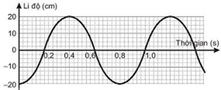

Đồ thị li độ theo thời gian của một chất điểm dao động điều hoà được mô tả như Hình 2.1.
a. Xác định biên độ, chu kì và pha ban đầu của dao động.
b. Viết phương trình dao động.
c. Xác định li độ của vật ở các thời điểm 0,4 s, 0,6 s và 0,8 s.

Hình 2.1